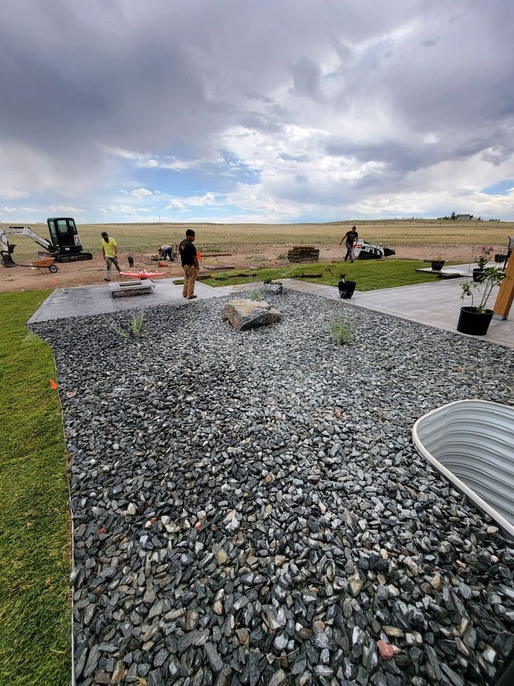

Every great landscape starts below the surface. Q Lawn Landscaping handles the earthwork, grading, and excavation that set a project up to succeed — across Cheyenne and the surrounding Wyoming communities.
We take on site preparation, rough and finish grading, excavation, and drainage work: leveling and shaping a yard, cutting in a patio or driveway base, correcting drainage and low spots, digging footings for retaining walls, and prepping soil for sod or planting. Good earthwork is the difference between a patio or lawn that lasts and one that settles, cracks, or pools water after the first big Cheyenne storm.
Because we also build the walls, patios, and lawns that go on top, we grade with the finished project in mind — so the excavation, base, and slope are right the first time. Residential and commercial, large or small.

Related services: Retaining Walls · Masonry & Hardscaping · See our work